Module Artefacts
Unit 1 Notes:
Activity 1
Reflective Activity 1 – Ethics in Computing in the age of Generative AI
The emergence of AI technologies and in particular generative AI since 2022 has impacted and played a role in transforming the landscape of computer science and the broader society. The ethical development and deployment of AI has become a significant and central concern for technologist, policymakers and the wider public. AI systems and technologies are increasingly influencing decisions in finance, healthcare, law, energy, and other industries in terms of the understanding and applying ethical principles in AI is not just an academic exercise but a necessity for responsible use and innovation. This piece looks at the meaning of AI ethics, some of the challenges globally, and puts together a suitable course of action, drawing from the work of Deckard (2023) and Correa, et al. (2023).
AI ethics can be viewed as the set of principles and values that guide that design, development and deployment of AI technologies. There are principles that aim to ensure that AI is fair, transparent, accountable and beneficial to all. As Deckard mentioned, ethical thinking in AI is multidisciplinary, needing knowledge of computer science, philosophy, law, and social sciences. It also involves judging and anticipating the societal impacts of such systems and addressing potential harm including bias, discrimination, privacy violations and the loss of autonomy.
A challenge in defining AI ethics is the spectrum of diversity of stakeholders. The meta-analysis of 200 governance policies and ethical guidelines shows 17 recurring principles such as transparency, accountability, privacy, safety and human oversight. The application and prioritization of these principles vary across regions, cultures, sectors and highlight different legal and economic contexts (Correa, et al., 2023).
One hurdle in AI ethics is the lack of consensus on which values should take precedence. Correa, et al. (2023) indicates the difficulty of establishing a common framework, looking at the various perspectives of governments, corporations, civil society and individuals worldwide. An examples would be the EU's AI Act, which prioritizes human rights and risk management while the US emphasizes innovation and competitiveness. China's view is shaped by different political and social priorities. This divergence leads to a fragmented regulatory landscape, complicating efforts to harmonize standards and ensure cross-border accountability.
The fast pace of innovation in the AI world further exacerbates this effort. Generative AI models, such as LLMs, can be trained in one jurisdiction and deployed globally, making it difficult to enforce local ethical standards. The lack of standardized governance and frameworks hampers the ability of policymakers.
A strong foundation in ethics and technology is essential supported by degrees in computer science, engineering, philosophy, or social science. Staying informed about AI developments through industry publications, conferences and forums are important for understanding ethical implications of new technologies. There is also a need to grasp the broader social, political and economic contexts in which AI operates as well as the cultural differences of power and discrimination.
Steady and strong communication skills are also required to ensure translation of complex ethical concepts into actionable guidelines for developers, policymakers, and public. Collaboration across disciplines ensures that ethical principles are grounded in varies perspectives and integrated into AI design from the start. Participation in public policy discussions help shape frameworks and promote ethical principles at the societal level. Lastly, practical solutions must be developed that can be implemented in real-world contexts, balancing competing interests and difficult decisions-making.
Given the large complexity and nature of AI ethics, a multi-approach is required.
Establishing universal ethical principles would be a start. International organisations such as OECD, UNESCO and the UN should work towards codifying a core set of ethical guidelines and principles for AI. These should include transparency, accountability, fairness, privacy, safety and human oversight. Local adoption is needed, a universal baseline would provide consistency, facilitation and control.
Recognizing that ethical norms are influenced by culture, legal, and social contexts, countries and organisations should adapt universal principles to their unique situations. The approach takes into account respecting diversity along with maintaining ethical foundations.
Effective AI ethics needs input from technologists, ethicists and legal experts, social scientists and society. Inclusive governance processes ensure that ethical guidelines are robust and practical and respond to society's needs.
AI systems should also be developed and deployed transparently, with room for public input. This allows for trust to be built and identification of unintended consequences. The impact of AI systems requires regular assessments, with mechanisms to update ethical guidelines and regulations as technologies evolve.
Harmonized ethical principles would support the development of consistent legal frameworks, reducing compliance costs and fostering innovation. Care should also be taken to respect national sovereignty and avoid imposing one-size fits all solutions.
AI also has the potential to exacerbate existing inequalities and potentially create new forms of discrimination. Ethical guidelines should also address issues of bias, fairness and inclusion ensuring that AI benefits all members of society. Public engagement is crucial to ensure other voices are represented and heard.
Computing professional should adhere to ethical standards due to compliance reasons and professional integrity. Organizations should provide ongoing training in AI ethics and create environments where ethical concerns can be raised without fear. Professional bodies are to play an integral role in setting standards and providing guidance.
Having these recommendations implemented would have several positive impacts. It would foster innovation and reduce compliance burdens. Social trust in AI systems would improve. It also increases strength in professional standards. The challenge remains, achieving international consensus. The ethical development and deployment of AI is a significant challenge. As it shapes industries and societies, establishing shared values and governance frameworks are needed.
References
Correa, N.K.et al. (2023) Worldwide AI ethics: A review of 200 guidelines and recommendations for AI governance. Patterns, Issue 4.
Deckard, R. (2023) What are ethics in AI? Available at: https://www.bcs.org/articles-opinion-and-research/what-are-ethics-in-ai/ (Accessed 17 January 2026).
Activity 2
Collaborative Learning Discussion 1
https://www.my-course.co.uk/mod/forum/discuss.php?d=329598

https://www.my-course.co.uk/mod/quiz/view.php?id=1268630
Unit 2 Notes:
Unit 2
Collaborative Learning Discussion 1
Peer response 1:
https://www.my-course.co.uk/mod/forum/discuss.php?d=328298
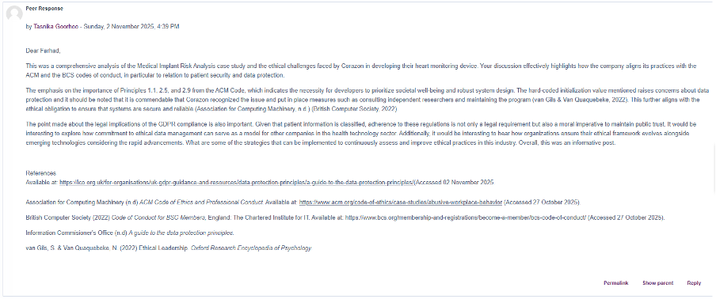
Peer response 2:
https://www.my-course.co.uk/mod/forum/discuss.php?d=329204
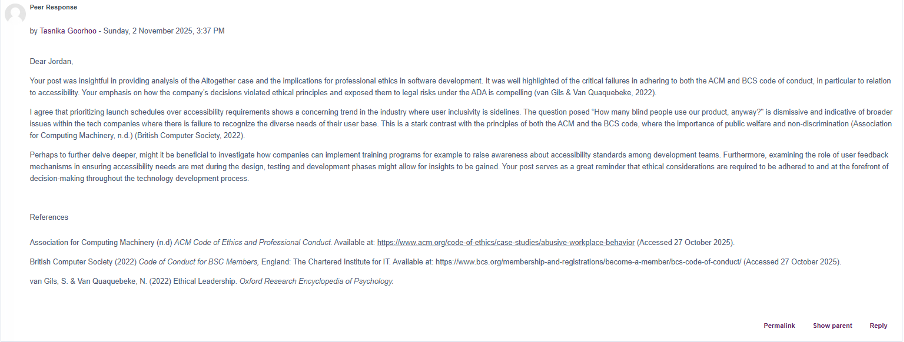
Unit 3 Notes:
Unit 3
Collaborative Learning Discussion 1
https://www.my-course.co.uk/mod/forum/discuss.php?d=336862
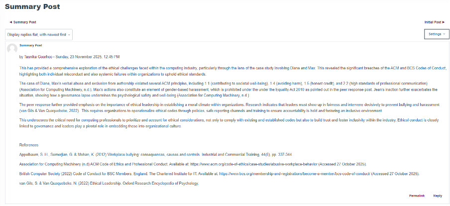
Unit 4 Notes:
Unit 4
Literature Review Outline

Unit 5 Notes:
Reflective Activity 2: Ethical Use of Data
This activity examined how seemingly harmless data collection can be misused. The Cambridge Analytica scandal showed how Facebook data was harvested and profiled to influence voter behaviour, raising concerns about consent and manipulation. Google Street View initially collected Wi-Fi payload data alongside images, illustrating how over-collection can violate privacy even when the stated purpose seems benign. TikTok-style quizzes and games gather personal information that can be combined to infer sensitive attributes or track users across platforms, creating risks that are not obvious to participants.
Across these cases, the ethical issues include lack of informed consent, opaque secondary use of data, and exploitation of user trust. Socially, misuse erodes public confidence in technology and can enable discrimination or manipulation at scale. Legally, these practices can breach data protection principles like purpose limitation, data minimisation, and transparency. Professionally, practitioners have a duty to question data provenance, minimise collection, and communicate risks clearly before deploying analytics.
Unit 7 Notes:
Unit 7
Collaborative Learning Discussion 2
Discussion Link
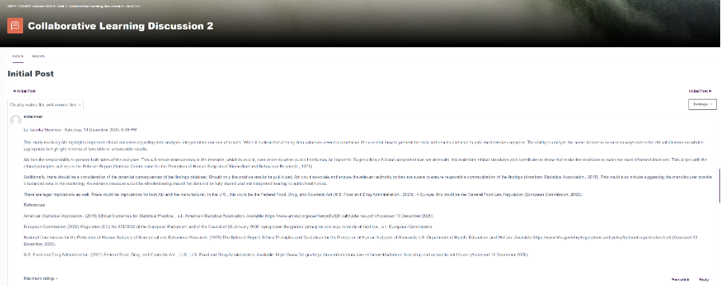
Hypothesis Testing and Summary Measures Worksheet
Example 7.1.1
Example 7.1.2
Example 7.1.3
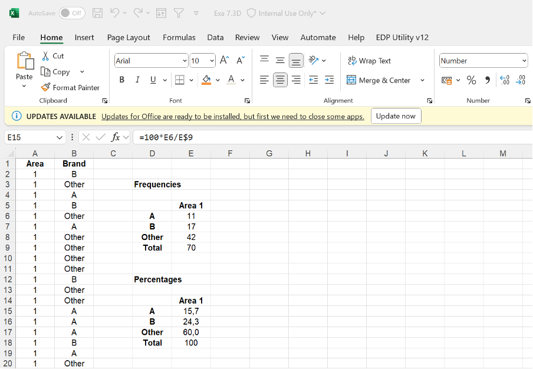
Ex 7.4F
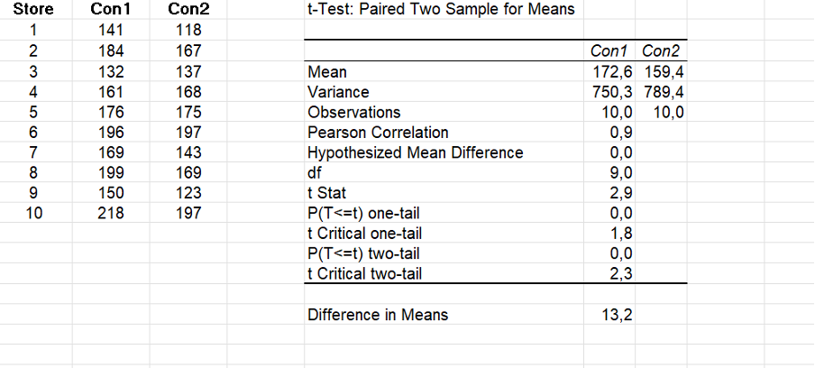
E7.6B
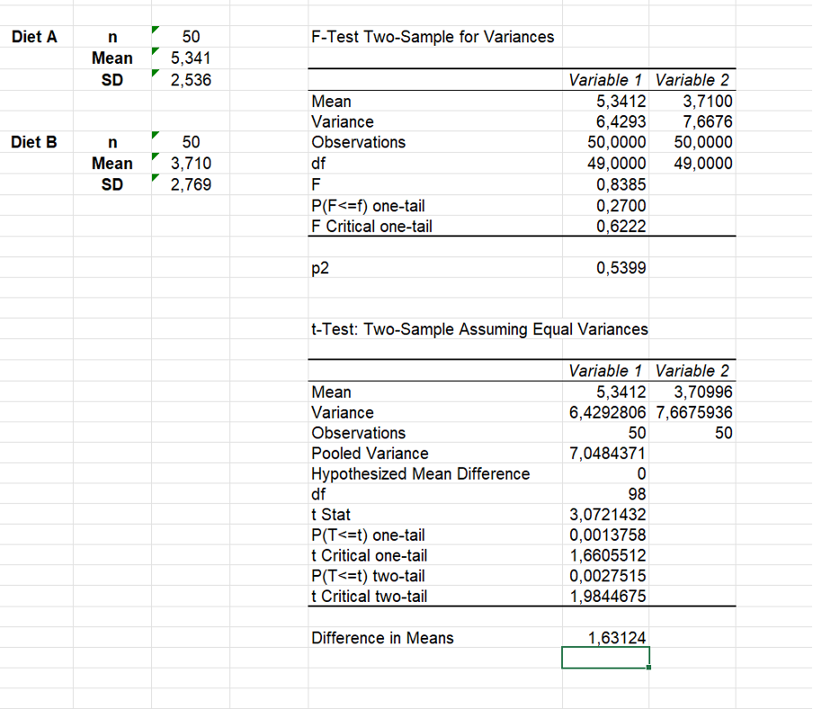
Ex 7.4G
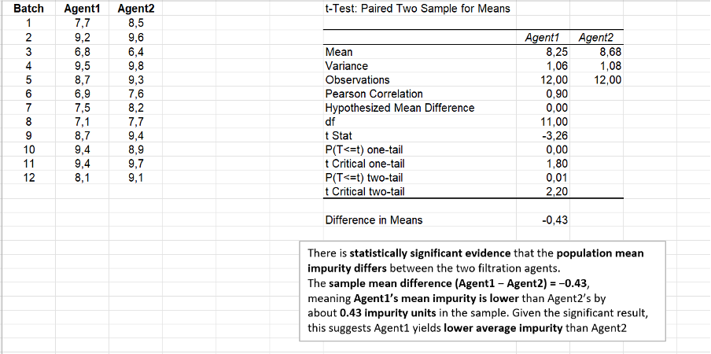
Ex 7.6B
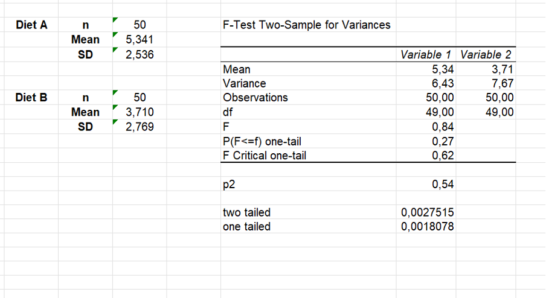
Unit 8 Notes:
Unit 8
Collaborative Learning Discussion 2
Peer response 1:
Peer Response 1 Link
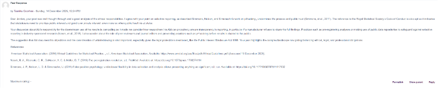
Peer response 2:
Peer Response 2 Link
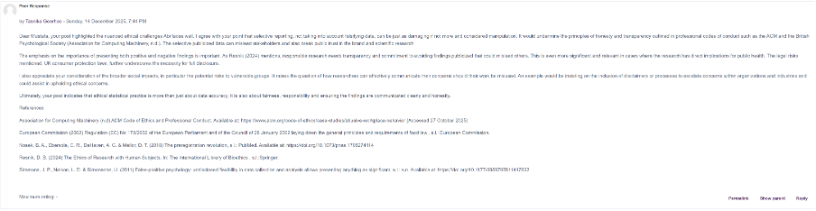
Research Proposal Outline:
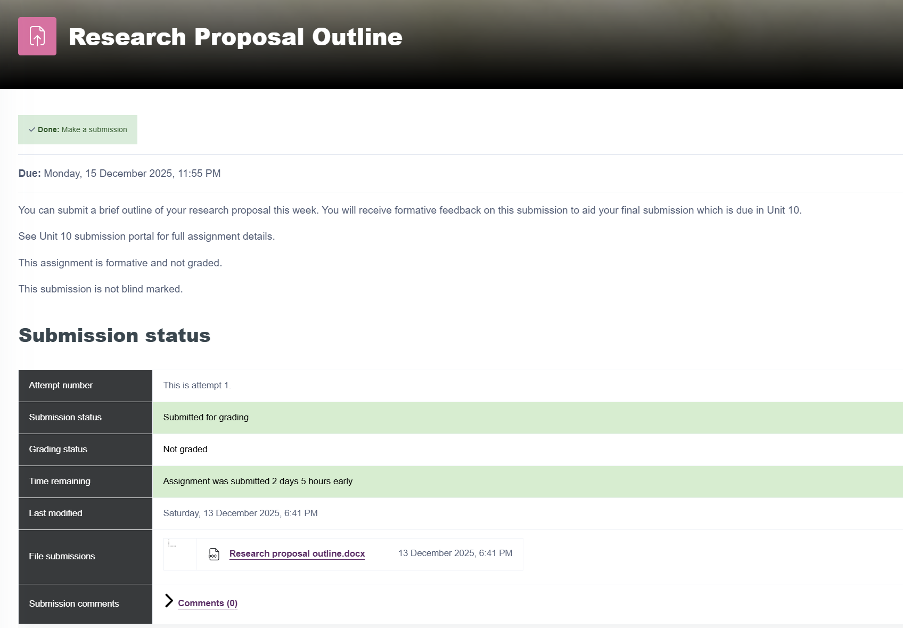
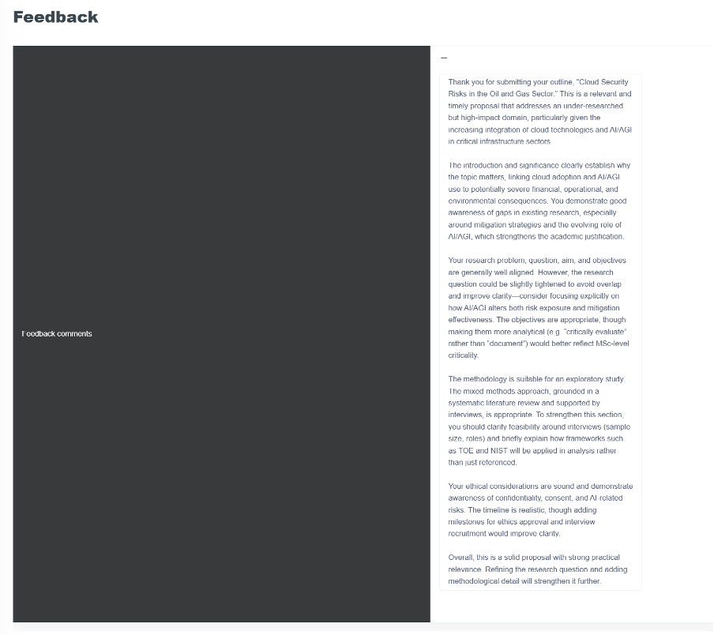
Ex 8.1D
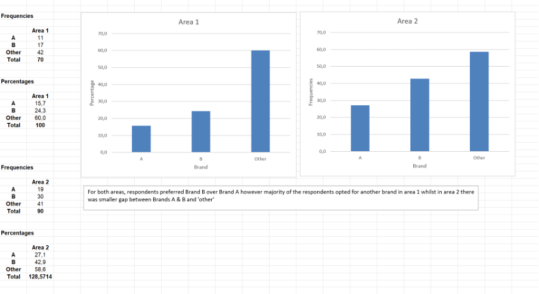
Ex 8.2D
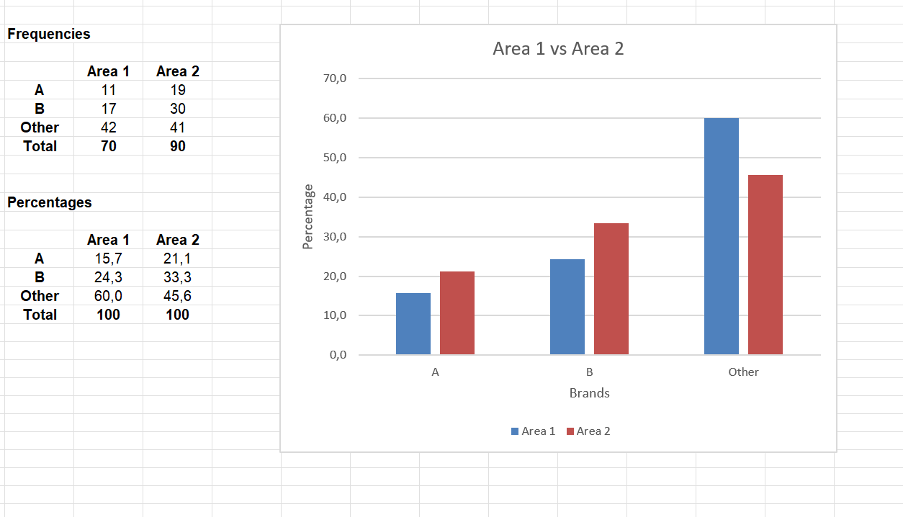
Ex 8.2E
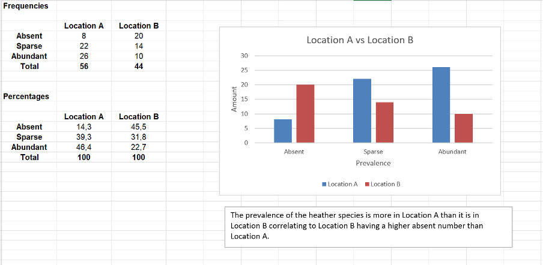
Ex 8.3B
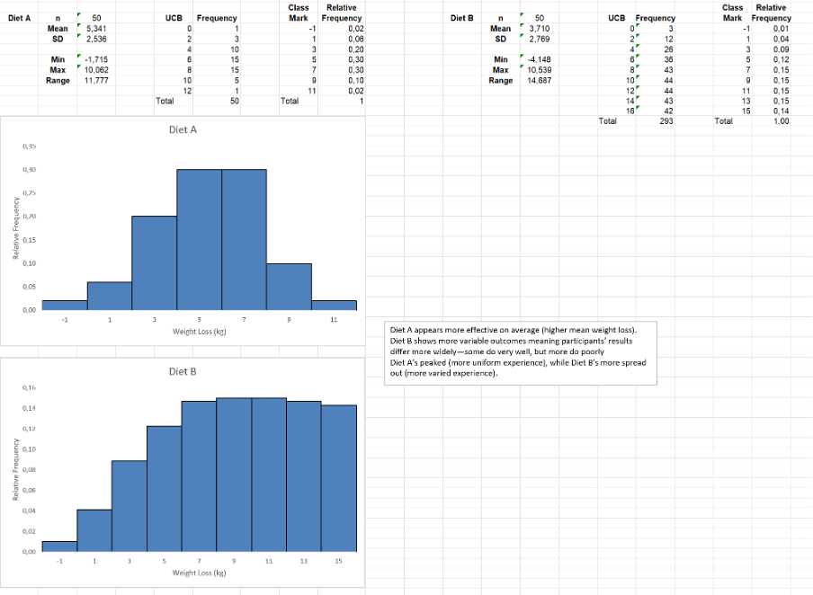
Unit 9 Notes:
Unit 9
Discussion Link

Unit 12 Notes:
Unit 12
Self Test Quiz